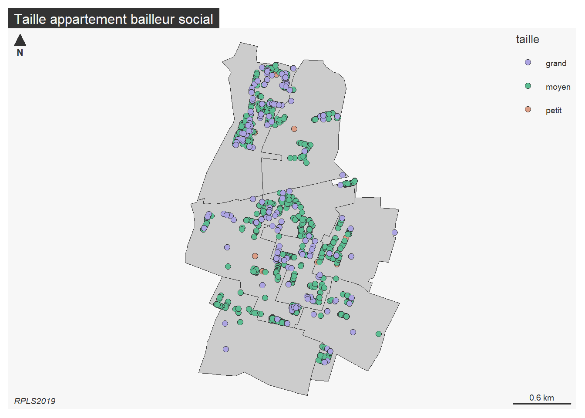
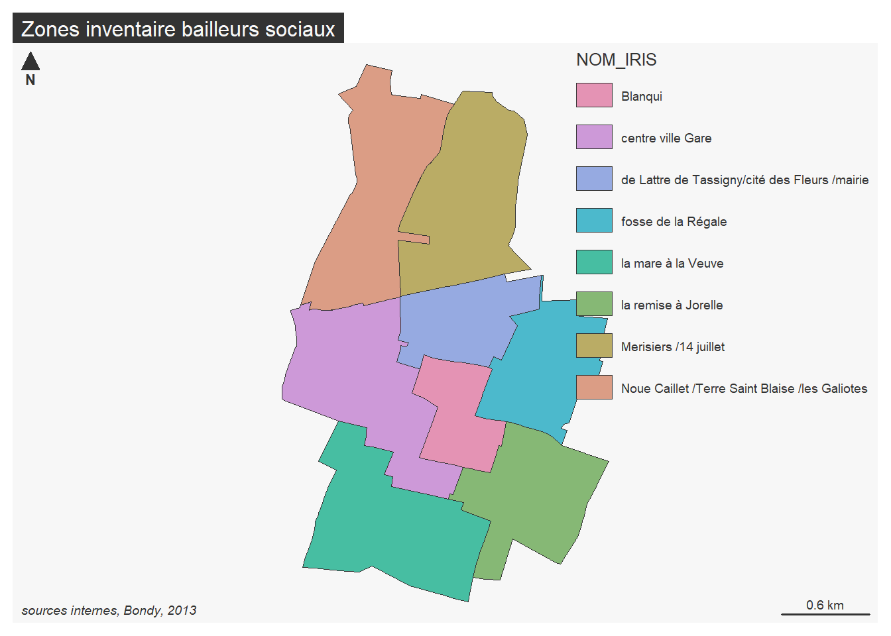
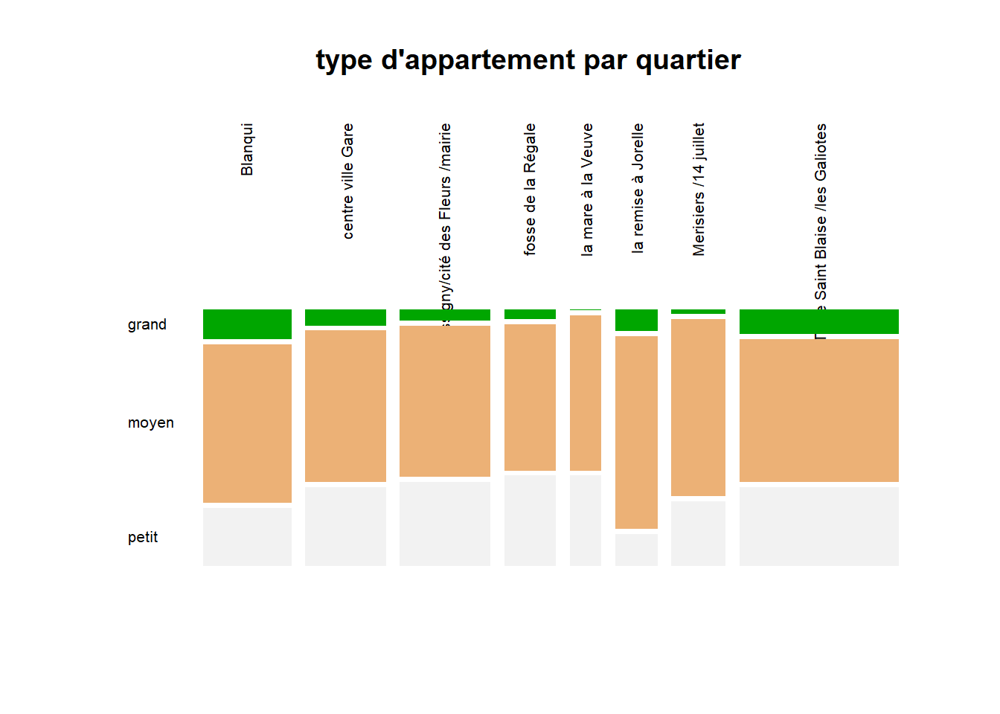
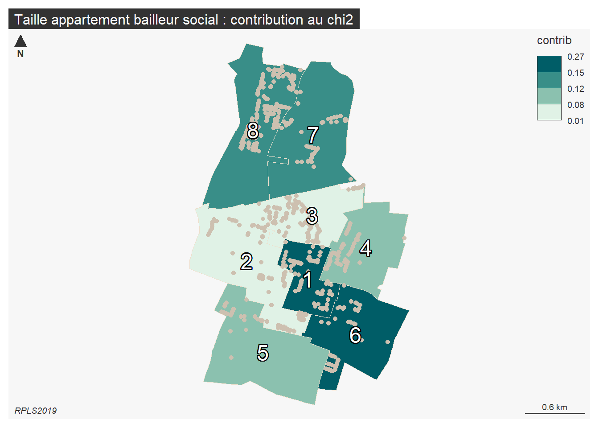
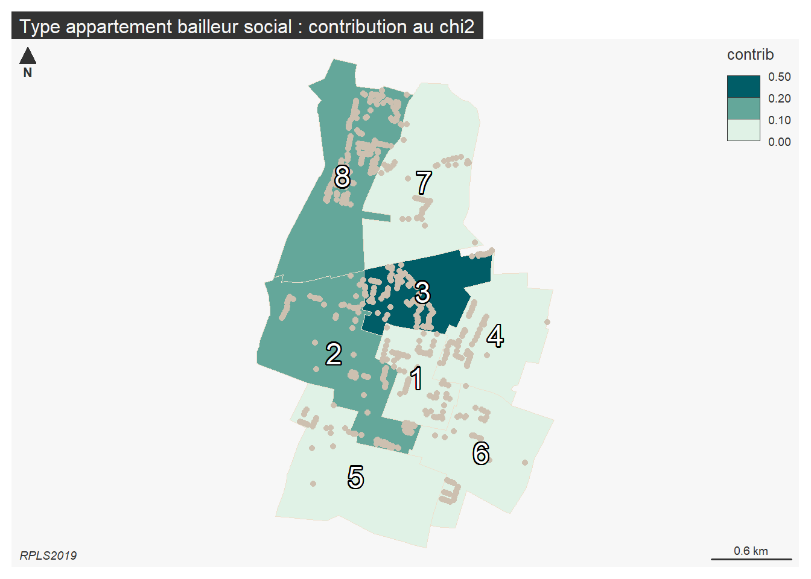

Statistiques bi variées - khi 2
1 Déroulement
1.1 Données d’exemple
hypothèse : relation entre les secteurs géographiques / les résidences et les types d’appartements (du studio au plus de 5 pièces)
Deux distributions connues par classe quelque soit la nature des modalités.
1.2 Différentes étapes
Tableau de contingence
calcul du khi2
comparaison avec le khi2 théorique
2 Exploration des données
2.1 Discrétisation des données
Afin de vraiment comprendre, on saisit des modalités différentes : à votre avis comment va-t-on les classer ?
Attention, valeur plancher 5 pour le calcul du khi2
## Linking to GEOS 3.9.1, GDAL 3.3.2, PROJ 7.2.1; sf_use_s2() is TRUE##
## 1 2 3 4 5 6 7 9 <NA>
## 631 2164 3676 2231 609 45 33 1 0
2.2 Cartographies de base
2.2.1 Les points logements

Quel est le problème de cette cartographie ?
## Reading layer `quartiersBailleurs' from data source
## `C:\Users\tachasa\01_stat\data\logement.gpkg' using driver `GPKG'
## Simple feature collection with 8 features and 1 field
## Geometry type: MULTIPOLYGON
## Dimension: XY
## Bounding box: xmin: 661091 ymin: 6865344 xmax: 663345.5 ymax: 6869044
## Projected CRS: RGF93 / Lambert-932.3 Carte des zones

3 Tableau de contingence
Au sens anglais du terme, ce qui peut exister
3.1 Création
Utiliser l’outil de table dynamique (dans le menu données) pour le créer
Résultat attendu :
| grand | moyen | petit | Sum | |
|---|---|---|---|---|
| Blanqui | 168 | 889 | 324 | 1381 |
| centre ville Gare | 84 | 778 | 404 | 1266 |
| de Lattre de Tassigny/cité des Fleurs /mairie | 65 | 869 | 482 | 1416 |
| fosse de la Régale | 33 | 483 | 299 | 815 |
| la mare à la Veuve | 2 | 307 | 179 | 488 |
| la remise à Jorelle | 59 | 521 | 86 | 666 |
| Merisiers /14 juillet | 17 | 611 | 223 | 851 |
| Noue Caillet /Terre Saint Blaise /les Galiotes | 254 | 1439 | 798 | 2491 |
| Sum | 682 | 5897 | 2795 | 9374 |
3.2 Analyse d’un tableau de contingence
Il faut présenter les sources, la structure et le contenu du tableau.
Lister les questions susceptibles d’être posées, notamment en étudiant les fréquences conditionnelles
3.2.1 Format conditionnel
 Cet outil est-il utile ici
?
Cet outil est-il utile ici
?
3.2.2 Fréquences conditionnelles en ligne et colonne
Pour pouvoir comparer les zones, chaque groupe est ramené à une même base égale à 100.
| grand | moyen | petit | |
|---|---|---|---|
| Blanqui | 12 | 64 | 23 |
| centre ville Gare | 7 | 61 | 32 |
| de Lattre de Tassigny/cité des Fleurs /mairie | 5 | 61 | 34 |
| fosse de la Régale | 4 | 59 | 37 |
| la mare à la Veuve | 0 | 63 | 37 |
| la remise à Jorelle | 9 | 78 | 13 |
| Merisiers /14 juillet | 2 | 72 | 26 |
| Noue Caillet /Terre Saint Blaise /les Galiotes | 10 | 58 | 32 |
savoir-faire tableur
Objectif : saisir une seule cellule et étendre la formule. quelle élément fixer, ligne ou colonne ?
utilisation du %

Analyse
répartition des types d’appartement puis lorsque ramené à une base 100, on peut comparer entre les zones.
les écarts à la moyenne par type d’appartements sont plus parlants

Qu’apporterait une étude des fréquences conditionnelles en colonnes ?
4 Khi2 : un exemple sur un dé truqué
Le dé est-il truqué ?
| face | effectif |
|---|---|
| 1 | 15 |
| 2 | 7 |
| 3 | 4 |
| 4 | 11 |
| 5 | 6 |
| 6 | 17 |
Le nombre total de lancers est de 60.
4.1 Hypothèse d’indépendance
hypothèse H0 : le dé n’est pas truqué (il y a indépendance entre la face et le nombre de fois où elle sort)
4.2 Effectifs théoriques
Sur le total des lancers (60), chaque face aurait pû sortir 10 fois.
| face | effectif | effectifThéorique |
|---|---|---|
| 1 | 15 | 10 |
| 2 | 7 | 10 |
| 3 | 4 | 10 |
| 4 | 11 | 10 |
| 5 | 6 | 10 |
| 6 | 17 | 10 |
4.3 Calcul du khi2
distance entre effectifs théoriques et observés
Elle se mesure avec le khi2
On calcule l’écart, puis le carré de cet écart et on pondère par l’effectif théorique.
## [1] 5 -3 -6 1 -4 7## [1] 25 9 36 1 16 49## [1] 2.5 0.9 3.6 0.1 1.6 4.9## [1] 13.64.4 Test du khi2
4.4.1 Paramètres du test
- degré de liberté : 5
C’est le nombre de valeurs possibles -1 (car on peut déterminer la 6e valeur à partir des 5 autres)
- Pour un risque à 0,05 (5 chances sur 100 de se tromper)
4.4.2 Résultat
Lecture dans la table du khi2
 le khi2 théorique est de 11,7, il est
donc inférieur au khi2 observé.
le khi2 théorique est de 11,7, il est
donc inférieur au khi2 observé.
Quand le khi2 théorique est inférieur, le test est rejeté.
Le test est rejeté avec un risque de 5 %
Donc, le dé est truqué.
5 Khi2 : Retour à la comparaison secteur / type d’appartement
5.1 Ennoncer l’hypothèse H0
Le type d’appartement est indépendant quartier.
5.2 Effectif théorique
La première case reçoit la formule :
- (total lg / total) * total colonne
C’est ce qu’on appelle également le produit des marges

## Ecarts entre observés et théoriques
Que signifie une valeur zéro ?
Utiliser la notion
- sur représentation / sous représentation

Les petits appartements sont sous-représentés à Blanqui et à la remise à Jorelle par rapport à une distribution identique entre les quartiers.
5.3 Le Khi2
Le khi2 va permettre de valider le rejet de l’hypothèse d’indépendance.
rappel : métrique euclidienne plutôt que les valeurs absolues on utilise les carrés
5.3.1 Le Khi2 partiel
On met les écarts rapportés à la valeur théorique d’indépendance au carré. Puis on divise par l’effectif théorique.

5.3.2 Le Khi2
Le total de tous les khi2 partiels

##
## grand moyen petit
## Blanqui 100.47386 868.7601 411.7661
## centre ville Gare 92.10710 796.4158 377.4771
## de Lattre de Tassigny/cité des Fleurs /mairie 103.02027 890.7779 422.2018
## fosse de la Régale 59.29486 512.7006 243.0046
## la mare à la Veuve 35.50416 306.9913 145.5046
## la remise à Jorelle 48.45445 418.9676 198.5780
## Merisiers /14 juillet 61.91402 535.3475 253.7385
## Noue Caillet /Terre Saint Blaise /les Galiotes 181.23128 1567.0394 742.7294C’est le total des khi2 partiels (dans notre exemple 338)
On définit :
- degré de liberté lg -1 * col -1
8 zone et 3 types d’appartements = 7 * 2 = 14
- risque 1, 5 et 10 %
Sur internet, dans n’importe quelle table, on cherche les valeurs correspondantes.
5.3.3 Rejet de H0 ou pas

HO hypothèse d’indépendance. son rejet implique qu’il y a une relation.
Les variables nombre de pièces et zones ont une relation avec une marge d’erreur très faible puisque le khi2 augmente quand le risque d’erreur baisse.
Les logiciels de stats proposent le risque limite, la valeur de bascule entre le rejet et l’acceptation de l’hypothèse nulle.
6 Pourquoi le khi2 ?
6.1 Les fréquences conditionnelles suffisent-t-elles ?
Comparaison des 2 tableaux
Estimation des écarts fondés sur la pondération des masses
6.2 Le khi2 met en évidence les variations faibles autour de la moyenne
A partir de quand le khi2 devient inférieur ?
Et si on retire la Remise à Jorelle ?
##
## grand moyen petit
## Blanqui 168 889 324
## centre ville Gare 84 778 404
## de Lattre de Tassigny/cité des Fleurs /mairie 65 869 482
## fosse de la Régale 33 483 299
## la mare à la Veuve 2 307 179
## Merisiers /14 juillet 17 611 223
## Noue Caillet /Terre Saint Blaise /les Galiotes 254 1439 798##
## Pearson's Chi-squared test
##
## data: tab2
## X-squared = 241.07, df = 12, p-value < 2.2e-16En faisant d’autres essais, le khi2 diminue autour de 100, mais reste largement au dessus du khi2 théorique (entre 33 et 42)
6.3 Et en carto…
Graphique
## [[1]]
## [1] "Blanqui"
## [2] "centre ville Gare"
## [3] "de Lattre de Tassigny/cité des Fleurs /mairie"
## [4] "fosse de la Régale"
## [5] "la mare à la Veuve"
## [6] "la remise à Jorelle"
## [7] "Merisiers /14 juillet"
## [8] "Noue Caillet /Terre Saint Blaise /les Galiotes"
##
## [[2]]
## [1] "grand" "moyen" "petit"
Carte des contributions au khi2
## [1] "statistic" "parameter" "p.value" "method" "data.name" "observed"
## [7] "expected" "residuals" "stdres"
Cette carte permet de commencer à classifier les quartiers par rapport à un modèle d’indépendance, une répartition des logements sociaux type. Il serait sans doute intéressant de répéter l’opération mais sur chaque résidence pour avoir une cartographie plus fine du territoire.
7 Un autre exemple : type de logement social et quartier
7.1 Barème

Importance des commentaires, même non demandés, ils donnaient un sens à tous ces chiffres !
J’avais mis tableau juste pour le khi2, j’ai fini par noter si le tableau était présent ou pas.
7.1.1 Données
7.1.1.1 Mauvaises réponses (mais intéressantes)
Dans chacun des 8 quartiers (IRIS) de Bondy, le nombre de foyers pauvres et leur degré de pauvreté
- il manque le terme variable et le type categorie, ceci dit la réponse est juste et surtout élégante.
Notre base de données est composée de 3 variables, la 1e, l’identifiant.. la 2e est une variable de catégorie et la dernière nomIRIS est une variable de catégorie. La base de données permet de comprendre si les IRIS qui apparaissent dans le tableaur sont des IRIS qui s’en sortent plutôt bien moins bien et pas du tout.
attention aux termes ! base de données
La première variable est la population et non pas une variable comme les autres
la formulation de l’hypothèse est maladroite (mais elle est là, du coup je l’ai noté comme commentaire du tableau de contingence)
7.1.1.2 Bonne réponse
Les zones et le type de logement social
7.1.1.3 Très bonne réponse
Il y a 2 variables : les zones de logements sociaux et le type de logement social (moins pauvre, pauvre et très pauvres). Ces deux variables sont de type catégorie.
7.1.1.4 Très très bonne réponse
Nous avons deux variables, la première, le financement et la seconde, le zonage par regroupement d’IRIS, la donnée FINAN du tableau est de type catégorielle (Très pauvre, pauvre, moins pauvre). Elle décrit le type de financement par appartement (càd le loyer versé).
- recodage FINAN en equiv
- inventaire de logement social, de l’iris à la zone.
Deux étudiants ont mis en titre Type de financement et zone géographique, impeccable !
7.2 Tableau de contingence
Une première observation du tableau nous permet de noter des chiffres très disparates d’un quartier à l’autre. La très grosse majorité des logements sociaux quelque soit le quartier sont de type pauvres. Les très pauvres et pauvres représentent la même quantité. Seul le quartier des Merisiers a quasiment autant de logements très pauvres, moins pauvres.
7.3 Effectifs théoriques
Il s’agit de mesurer relativement à la répartition des logements, l’effectif au hasard. Ainsi, on voit bien que les logements très pauvres et moins pauvres sont en quantité égale dans toutes les zones.
7.4 Calcul du khi2
Le khi2 calculé est largement supérieur au khi2 du tableau.
##
## moins pauvres pauvres
## Blanqui 159.25549 1053.0604
## centre ville Gare 145.99381 965.3689
## de Lattre de Tassigny/cité des Fleurs /mairie 163.29166 1079.7491
## fosse de la Régale 93.98496 621.4658
## la mare à la Veuve 56.27566 372.1169
## la remise à Jorelle 76.80243 507.8481
## Merisiers /14 juillet 98.13644 648.9170
## Noue Caillet /Terre Saint Blaise /les Galiotes 287.25955 1899.4739
##
## très pauvres
## Blanqui 168.68413
## centre ville Gare 154.63729
## de Lattre de Tassigny/cité des Fleurs /mairie 172.95925
## fosse de la Régale 99.54929
## la mare à la Veuve 59.60742
## la remise à Jorelle 81.34948
## Merisiers /14 juillet 103.94655
## Noue Caillet /Terre Saint Blaise /les Galiotes 304.26659##
## Pearson's Chi-squared test
##
## data: tab
## X-squared = 3882.4, df = 14, p-value < 2.2e-16Donc il y n’y a pas d’indépendance entre les variables.
7.4.1 Unique exemple de réponse
On peut donc voir que le test n’est pas valide, le khi2 calculé étant supérieur au khi2 théorique, l’hypothèse du lien entre le financement des logements (maison) et des IRIS est donc nulle
Analyse de cette réponse.
(j’ai quand même mis deux points, le truc n’est pas facile et j’attendais un essai)
7.4.2 Ce que j’attend désormais
Si on regarde la contribution de chaque zone au modèle, on voit qu’un quartier se singularise complètement par rapport aux autres, De Lattre de Tassigny possède autant de logement moins pauvre que pauvre. Du coup il contribue pour quasiment la moitié au khi2. Centre-ville et Noue Caillet ont une sur représentation de logements très pauvres. Tous les autres quartiers s’écartent moins du modèle.

7.5 Cartographie
L5GEABIM Analyses bivariées et multivariées